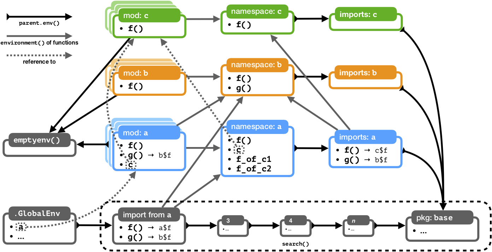

Note: This document describes internal implementation details. They are not required knowledge for users of the ‘box’ package and module authors.
Preliminaries
To ensure that module environments are properly isolates from each
other, and to enable fine-grained control over imports and exports,
loaded modules (as well as packages loaded via box::use)
correspond to a mesh of several interconnected environments.
Unfortunately the exact relationship between these environments isn’t trivial, so the following document aims at explaining the gist.
Fundamentally, module environments follow a similar architecture to package environments, but they deviate in crucial ways. For a good explanation of package environments, see How R Searches and Finds Stuff by Suraj Gupta, and Environments in Advanced R by Hadley Wickham. The following assumes that the reader has a more than passing familiarity with these concepts.
When speaking of “package environments” above and in the following,
this refers to packages as handled by base R and the R package namespace
functionality. For packages that are loaded by box::use,
the rules are the same as for modules.
Let’s now consider an example of several loaded modules, and how they interact.
An example
This example will use three modules — the minimum number necessary to show some of the interactions of the module environments. Let’s define these three modules. We’ll do so in inverse order of their usage:
b.r
#' @export
f = function () 'b$f'
g = function () 'b$g'Module b defines and exports the function
f, and in addition defines the function g.
a.r
#' @export
box::use(./b[g = f, ...])
box::use(./c[...])
#' @export
box::use(./c)
#' @export
f = function () 'a$f'
f_of_c1 = c$f
f_of_c2 = get('f', parent.env(environment()))
stopifnot(identical(f_of_c1, f_of_c2))Module a imports and re-exports all names from
b (changing the name of b$f to
g); it also imports, but does not re-export, all names from
c (and, additionally, defines an alias for the module,
which it exports).
It further defines and exports the function f and
defines, but does not export, the functions f_of_c1 and
f_of_c2 (which are defined such that they are identical to
each other — hopefully it will become clear why later).
Finally, let’s use the modules by executing the following code:
box::use(a = ./a[f, g])Now the name a is defined in .GlobalEnv and
refers to the module environment of module a. The exported
names f and g of a are also
available in .GlobalEnv (but not defined inside
.GlobalEnv).
The loaded modules can be represented by the following schematic, with each box corresponding to an environment:

Let’s go over the different types of environment associated with each module, and how they are connected.
Environments
Module namespace
Modules are loaded into their own dedicated environment, the
module namespace. Every name that is defined by a module is
defined inside it. It is thus also the enclosing environment of the
module’s functions. Lastly, the module namespace also stores
meta-information about the module in a hidden member named
.__module__..
This corresponds to the package namespace.
Module imports environment
The parent environment of the module namespace is the imports
environment, which contains all the names that a module imports via
attachment declarations in box::use expressions.
The parent environment of the imports environment is the R
base namespace environment. The module imports environment
thus corresponds to the package imports environment.
Module export environment
The module export environment, also called just “module environment”
in the code base, contains all names that are marked as exported by a
module. If users create a module alias in their box::use
call, the alias will be a reference to this environment.
Similarly, attached names are selected as a subset from the module export environment (then copied into the imports environment).
There is no direct equivalent to this environment in R packages, because R packages do not distinguish between exported names and names imported by the code that loaded the package. By contrast, ‘box’ needs to distinguish the set of exports from the set of names that are imported (= “attached”) by client code.
Importing into other environments
Module import environments store imports from one or more module into
another. However, modules can also be imported from inside the global
environment, or from inside functions, which have their own local
execution environment (the stack frame). When this happens, a new
imports environment is created on the fly, and attached to the importing
environment’s parent.env chain. Calling
box::use with a non-empty attach list in
.GlobalEnv is therefore similar to calling
library. In particular, inside .GlobalEnv the
call box::use(pkg[...]) in pretty much equivalent to
calling library(pkg), and is discouraged for the same
reason that library(pkg) is discouraged.